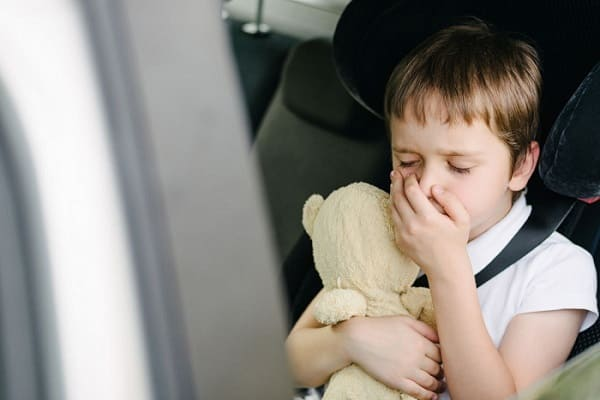
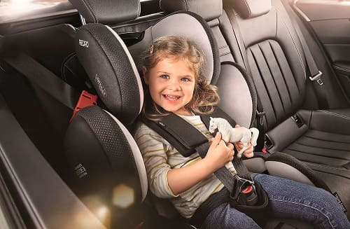

Маленькие животики особенно склонны к укачиванию во время поездок на автомобиле. Морская болезнь развивается, когда мозг получает беспорядочные сигналы от желудка и глаз. Ребенок, глубоко упакованный в детское кресло на заднем сиденье, видит только неподвижную спинку переднего сиденья, в то время как датчики движения, расположенные во внутреннем ухе, говорят мозгу, что тело движется. У некоторых детей центр равновесия более чувствительный, чем у других. Дезориентированный центр равновесия сбивает настройки мозга, и он в свою очередь расстраивает животик. Попробуйте следующие способы настроить маленький животик на путешествие.
Планируйте заранее. Попробуйте путешествовать ночью. Сон может успокоить рассогласованный пищеварительный тракт. И в качестве бонуса — вы прибываете к месту назначения с выспавшимся и довольным ребенком.
Накормите ребенка. Еда стимулирует деятельность тех отделов нервной системы, которые могут успокоить желудок. Предложите ребенку легкую нежирную пищу — хлебцы, макароны, фрукты — перед поездкой. Возьмите с собой не отягощающие желудок закуски, например, домашнее печенье и охлажденный напиток в картонной упаковке с соломинкой, чтобы удовлетворить оголодавшего путешественника.
Накормите автомобиль. Поскольку дети чувствительны к запаху выхлопных газов и бензина на бензоколонке, постарайтесь заполнить бензобак до того, как ребенок окажется в автомобиле.
Составьте прямой маршрут. По возможности воспользуйтесь прямыми дорогами и автострадами. Частые повороты и остановки расстраивают нежные животики.
Почаще делайте пит-стопы. Относитесь к путешествиям как к вскармливанию младенца: чаще и понемногу лучше, чем один раз и долго. Отправляясь далеко, будьте готовы делать частые остановки.
Обеспечьте место с видами. Детей начинает тошнить, если они лишены возможности смотреть в окно, но не пренебрегайте безопасностью ради зрелищ. Конечно, если ребенок сидит на переднем сиденье и смотрит в переднее окно, вероятность появления тошноты меньше, чем когда он сидит сзади и смотрит в боковое окно, но на переднем сиденье могут сидеть только дети старше 12 лет — из-за подушек безопасности. Середина заднего сиденья — самое безопасное место для маленького путешественника. Используйте автокресла для середины заднего сиденья, одобренные государственным органом контроля и достаточно высокие для того, чтобы ребенок мог смотреть в окно.

Обеспечьте приток свежего воздуха. Свежий воздух — лучший друг расстроенного животика. Откройте окна с обеих сторон для сквозной вентиляции. Избегайте веществ, загрязняющих воздух в автомобиле: табачного дыма или духов, к примеру.
Возьмите с собой музыку. Возьмите в дорогу любимые треки и добавьте к ним что-то новенькое и неожиданное. Когда маленькие ушки сосредоточены на привлекательных мелодиях, мозгу не до расстроенного животика.
Поддерживайте разговор. Если вы сможете развлекать ребенка, не отвлекаясь от вождения и дороги, поездка будет более приятной для вас обоих. Беседуйте с ребенком, побуждая его отвечать вам (конечно, если дело происходит не ночью). Если ребенку скучно, у него больше возможностей сосредоточиться на том, что его тошнит. Счастливый и занятый ребенок реже требует остановиться.
Играйте в игры. Игра, требующая умственных усилий, также отвлечет внимание ребенка от животика. Попробуйте поиграть в «шпиона» — это заставит ребенка сосредоточиться на далеких объектах, таких, как рекламные щиты, здания, горы... Фокусировка на далеко расположенных предметах гораздо полезнее для животика, чем рассматривание картинок в книжке. Просмотр фильма или игра в видеоигры сами по себе могут спровоцировать морскую болезнь у некоторых детей. |
Здоровье ребенка от докторов Сирс / Сирс У. и др.